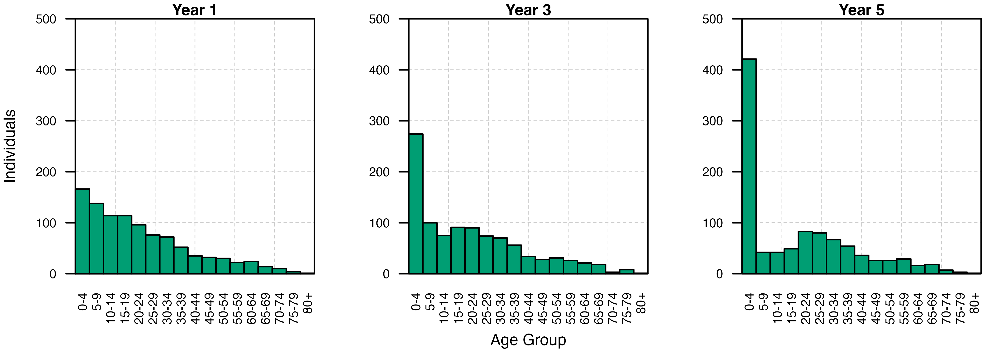

Demography
Demography.Rmd
# Load the requisite packages:
library(malariasimulation)
# Set colour palette:
cols <- c("#E69F00", "#56B4E9", "#009E73", "#CC79A7","#F0E442", "#0072B2", "#D55E00")The dynamics of malaria transmission, and the efficacy of
interventions designed to interrupt it, are highly context specific and
an important consideration is the demography of the population(s) under
investigation. To suit the research needs of the user,
malariasimulation allows for the specification of custom
human population demographics by allowing them to specify age-group
specific death rate parameters. It also enables users to instruct the
model to render outputs with variables of interest (e.g. human
population, number of cases detectable by microscopy, number of severe
cases, etc.) presented by user-defined age groups. In this vignette, we
use simple, illustrative cases to demonstrate how to customise the
output rendered by the run_simulation() function, and how
to specify both fixed and time-varying custom death rates.
Age group rendering
First, we’ll establish a base set of parameters using the
get_parameters() function and accept the default values.
The run_simulation() function’s default behaviour is to
output only the number of individuals aged 2-10 years old
(output$n_age_730_3650, where 730 and 3650 are the ages in
days). However, the user can instruct the model to output the number of
individuals in age groups of their choosing using the
age_group_rendering_min_ages and
age_group_rendering_max_ages parameters. These arguments
take vectors containing the minimum and maximum ages (in daily time
steps) of each age group to be rendered. To allow us to see the effect
of changing demographic parameters, we’ll use this functionality to
output the number of individuals in ages groups ranging from 0 to 85 at
5 year intervals. Note that the same is possible for other model outputs
using their equivalent min/max age-class rendering arguments
(n_detect , p_detect, n_severe,
n_inc, p_inc, n_inc_clinical,
p_inc_clinical, n_inc_severe, and
p_inc_severe, run ?run_simulation() for more
detail).
We next use the set_equilibrium() function to tune the
initial parameter set to those required to observe the specified initial
entomological inoculation rate (starting_EIR) at
equilibrium. We now have a set of default parameters ready to use to run
simulations.
# Set the timespan over which to simulate
year <- 365; years <- 5; sim_length <- year * years
# Set an initial human population and initial entomological inoculation rate (EIR)
human_population <- 1000
starting_EIR <- 5
# Set the age ranges (in days)
age_min <- seq(0, 80, 5) * 365
age_max <- seq(5, 85, 5) * 365
# Use the get_parameters() function to establish the default simulation parameters, specifying
# age categories from 0-85 in 5 year intervals.
simparams <- get_parameters(
list(
human_population = human_population,
age_group_rendering_min_ages = age_min,
age_group_rendering_max_ages = age_max
)
)
# Use set_equilibrium to tune the human and mosquito populations to those required for the
# defined EIR
simparams <- set_equilibrium(simparams, starting_EIR)Set custom demography
Next, we’ll use the in-built set_demography() function
to specify human death rates by age group. This function accepts as
inputs a parameter list to update, a vector of the age groups (in days)
for which we specify death rates, a vector of time steps in which we
want the death rates to be updated, and a matrix containing the death
rates for each age group in each timestep. The
set_demography() function appends these to the parameter
list and updates the custom_demography parameter to
TRUE. Here, we instruct the model to implement these
changes to the demographic parameters at the beginning of the simulation
(timesteps = 0).
# Copy the simulation parameters as demography parameters:
dem_params <- simparams
# We can set our own custom demography:
ages <- round(c(0.083333, 1, 5, 10, 15, 20, 25, 30, 35, 40, 45,
50, 55, 60, 65, 70, 75, 80, 85, 90, 95, 200) * year)
# Set deathrates for each age group (divide annual values by 365:
deathrates <- c(
.4014834, .0583379, .0380348, .0395061, .0347255, .0240849, .0300902,
.0357914, .0443123, .0604932, .0466799, .0426199, .0268332, .049361,
.0234852, .0988317, .046755, .1638875, .1148753, .3409079, .2239224,
.8338688) / 365
# Update the parameter list with the custom ages and death rates through the in-built
# set_demography() function, instructing the custom demography to be implemented at the
# beginning of the model run (timestep = 0):
dem_params <- set_demography(
dem_params,
agegroups = ages,
timesteps = 0,
deathrates = matrix(deathrates, nrow = 1)
)
# Confirm that the custom demography has been set:
dem_params$custom_demography
#> [1] TRUESimulation
Having established parameter sets with both default and custom
demographic parameterisations, we can now run a simulation for each
using the run_simulation() function. We’ll also add a
column to each to identify the runs.
# Run the simulation with the default demographic set-up:
exp_output <- run_simulation(sim_length, simparams)
exp_output$run <- 'exponential'
# Run the simulation for the custom demographic set-up:
custom_output <- run_simulation(sim_length, dem_params)
custom_output$run <- 'custom'Visualisation
Using barplots, we can visualise the effect of altering the demographic parameters by comparing the distribution of people among the age-classes we instructed the model to output on the final day of the simulation. The default demography is depicted in blue, while the custom demography is given in orange. Under the custom demography, the frequency of individuals in older age classes declines almost linearly, while in the default demography the number of individuals in each age class declines exponentially with age.
# Combine the two dataframes:
dem_output <- rbind(exp_output, custom_output)
# Subset the final day of the simulation for each of the two demography runs:
dem_output <- dem_output[dem_output$timestep == 5 * 365,]
# Extract the age variables and convert the dataframe to long format:
convert_to_long <- function(age_min, age_max, output) {
output <- lapply(
seq_along(age_min),
function(i) {
data.frame(
age_lower = age_min[[i]],
age_upper = age_max[[i]],
n = output[,paste0('n_age_', age_min[[i]], '_',age_max[[i]])],
age_plot = age_min[[i]]/365,
run = output$run,
timestep = output$timestep)
}
)
output <- do.call("rbind", output)
}
# Convert the output for plotting:
dem_output <- convert_to_long(age_min, age_max, dem_output)
# Define the plotting window
par(mfrow = c(1, 2), mar = c(4, 4, 1, 1))
# a) Default/Exponentially-distributed demography
plot.new(); grid(lty = 2, col = "grey80", lwd = 0.5, ny = 5, nx = 6); par(new = TRUE)
barplot(height = dem_output[dem_output$run == "exponential", c("n", "age_plot")]$n,
names = c(paste0(seq(0,75, by = 5),"-",seq(0,75, by = 5)+4), "80+"),
axes = TRUE, space = 0, ylim = c(0, 250), xaxs = "i", yaxs = "i",
main = "Default", xlab = "Age Group", ylab = "Individuals",
cex.axis = 0.8, cex.names = 0.8, cex.lab = 1, cex.main = 1, las = 2,
col = cols[2]); box()
# b) Custom demography
plot.new()
grid(lty = 2, col = "grey80", lwd = 0.5, ny = 5, nx = 6)
par(new = TRUE)
barplot(height = dem_output[dem_output$run == "custom", c("n", "age_plot")]$n,
names = c(paste0(seq(0,75, by = 5),"-",seq(0,75, by = 5)+4), "80+"),
axes = TRUE, space = 0, ylim = c(0, 250), xaxs = "i", yaxs = "i",
main = "Custom", xlab = "Age Group",
cex.axis = 0.8, cex.names = 0.8, cex.lab = 1, cex.main = 1, las = 2,
col = cols[1]); box()
Set dynamic demography
Using the timesteps and deathrates
arguments, we can also use the set_demography() function to
update the death rates of specific age groups through time. In the
following example, we’ll use this functionality to first set our own
initial death rates by age group, then instruct the model to increase
the death rates in the age groups 5-10, 10-15, and 15-20 years old by a
factor of 10 after 2 years. We’ll finish by plotting the number of
individuals in each age class at the end of each year to visualise the
effect of time-varying death rates on the human population
age-structure.
Parameterisation
We’ll start by making a copy of the base parameters which have been
instructed to output the population size through time
(simparams). Next, we create a version of the
deathrates vector created earlier updated to increase the
death rates of the 5-10, 10-15, and 15-20 age groups by 10%. Finally, we
use set_demography() to update our parameter list and
specify our custom demography. This is achieved providing the
timesteps argument with a vector of days to update the
death rates (0 and 730 days), and providing deathrates with
a matrix of death rates where each row corresponds to a set of death
rates for a given update.
# Store the simulation parameters in a new object for modification
dyn_dem_params <- simparams
# Increase the death rates in some age groups (5-15 year olds):
deathrates_increased <- deathrates
deathrates_increased[3:6] <- deathrates_increased[3:6] * 10
# Set the population demography using these updated deathrates
dyn_dem_params <- set_demography(
dyn_dem_params,
agegroups = ages,
timesteps = c(0, 2*365),
deathrates = matrix(c(deathrates, deathrates_increased), nrow = 2, byrow = TRUE)
)Simulation
Having established the parameter list for the dynamic death rate
simulation, we can now run the simulation using the
run_simulation() function.
# Run the simulation for the dynamic death rate demography
dyn_dem_output <- run_simulation(sim_length, dyn_dem_params)Visualisation
Bar plots of the age structure of the human population at the end of each year show the marked effect that increasing the death rate within a small subset of age classes can have on the demography of the human population over time.
# Filter out the end-of-year population sizes, add a column naming the run, and convert
# dataframe to long-form:
dyn_dem_output <- dyn_dem_output[dyn_dem_output$timestep %in% (c(1,3,5) * 365),]
dyn_dem_output$run <- 'dynamic'
dyn_dem_output <- convert_to_long(age_min, age_max, dyn_dem_output)
# Set a 1x5 plotting window:
par(mfrow = c(1,3), mar = c(4, 4, 1, 1))
# Loop through the years to plot:
for(i in c(1,3,5)) {
plot.new()
grid(lty = 2, col = "grey80", lwd = 0.5, ny = 5, nx = 6)
par(new = TRUE)
barplot(height = dyn_dem_output[dyn_dem_output$timestep/365 == i,c("n", "age_plot")]$n,
names = c(paste0(seq(0,75, by = 5),"-",seq(0,75, by = 5)+4), "80+"),
axes = TRUE, space = 0,
ylim = c(0, 500),
main = paste0("Year ", i), cex.main = 1.4,
xlab = ifelse(i == 3, "Age Group", ""),
ylab = ifelse(i == 1, "Individuals", ""),
xaxs = "i", yaxs = "i", las = 2,
cex.axis = 0.8, cex.names = 0.8, cex.lab = 1, cex.main = 1, col = cols[3])
box()
}